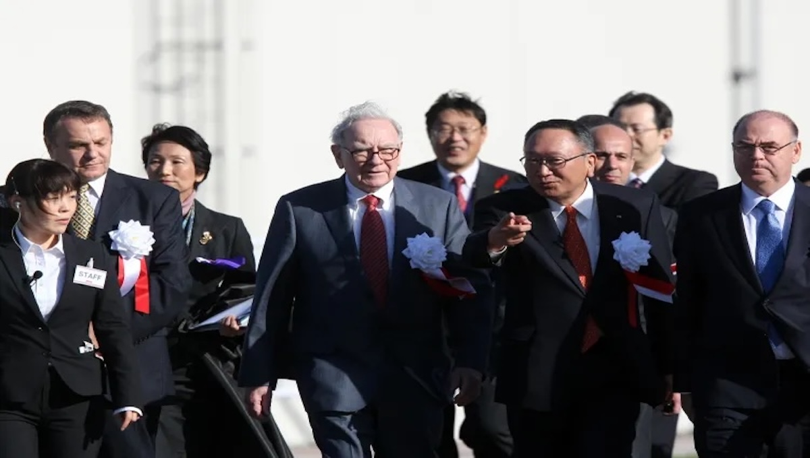

Warren Buffett’s Strategic Investments in Japanese Companies (2026 Guide)
Warren Buffett’s Berkshire Hathaway has dramatically increased stakes in Japan’s top trading houses, marking one of the most notable international investing moves of the decade. As of 2025, Buffett’s combined holdings in these companies are worth over $30 billion, a substantial portion of Berkshire Hathaway’s global equity portfolio.
Which Japanese Companies Does Buffett Own?
Buffett’s Japanese investments focus on the five largest “sogo shosha” trading houses, diversified conglomerates that operate across industries including energy, commodities, infrastructure, logistics, and finance:
- Mitsubishi Corporation
- Itochu Corporation
- Mitsui & Co., Ltd.
- Marubeni Corporation
- Sumitomo Corporation
Berkshire Hathaway holds around 8.5%–9.8% ownership in each company, with regulatory filings showing stakes approaching the legal limit of just under 10% per firm. These companies are known for diversified global revenue streams, stable dividend payouts, and long-term business resilience, the kind of characteristics Warren Buffett typically targets.
The operation took place in November, weeks before U.S. authorities seized an oil tanker off the coast of Venezuela earlier this week for alleged sanctions violations, another enforcement action Washington had not undertaken in years.
Iran remains subject to extensive U.S. sanctions. Neither Tehran nor Beijing immediately responded to the report, though China, one of Iran’s primary trading partners, has consistently denounced U.S. sanctions as unlawful.

Why Is Buffett Betting on Japanese Trading Houses?
1. Diversification and Value Investing
Buffett applies his classic value investing philosophy by buying well managed, undervalued firms with stable cash flows. Japanese trading houses fit this model. They trade at comparatively low valuations versus many U.S. peers and possess diversified business portfolios. CNBC
2. Strong Corporate Governance & Shareholder Returns
In recent years, Japanese firms have improved capital allocation and corporate governance, increasing dividends and stock buybacks a shift that aligns with Berkshire’s long-term investment approach.
3. Strategic Currency and Debt Management
Buffett has utilized yen-denominated bonds to hedge FX risk and lower financing costs. This strategy helps balance Berkshire’s foreign exposure while generating income from dividends and buybacks. Investopedia
4. Long-Term Commitment
Buffett has publicly stated that Berkshire Hathaway intends to hold these Japanese stocks for decades, not years, similar to the way it has held legendary U.S. investments like Coca-Cola and American Express. Buffett’s major investments in Japan offer important lessons for individual investors.
 Exposure to Global Markets.
Investing in these Japanese companies provides exposure to international markets and economic sectors that differ from the U.S. equity landscape.
Investment Options for Retail Investors. You don’t need billions to follow Buffett’s lead. Common ways for everyday investors to invest alongside Buffett’s Japan strategy include the following.
Look at Japan focused ETFs that hold a broad basket of Japanese equities, buy direct stock purchases of individual Japanese trading companies and American Depositary Receipts (ADRs) available on U.S. exchanges for these firms.
Possible Risks to Consider?
Currency fluctuations can impact returns when investing in foreign stocks. Higher trading costs and fees when buying foreign shares directly. Japan’s economic growth rates and macro conditions differ from the U.S.
Warren Buffett’s Berkshire Hathaway now holds significant minority interests in Japan’s five biggest trading houses, worth over $30B.
These companies are highly diversified, underappreciated by global markets, and pay steady returns.
Retail investors can replicate Buffett’s approach through ETFs, ADRs, or direct purchases but should weigh currency risk and expenses.
Buffett’s long-term commitment underscores his belief in value, diversification, and shareholder friendly management
Analysis By The Societal News Team updated 28DEC2025